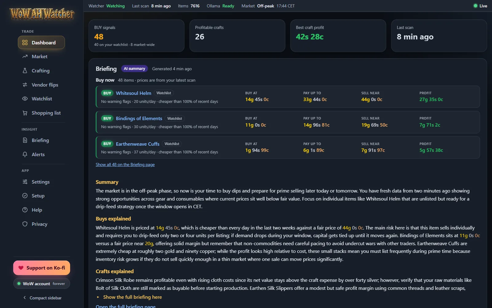
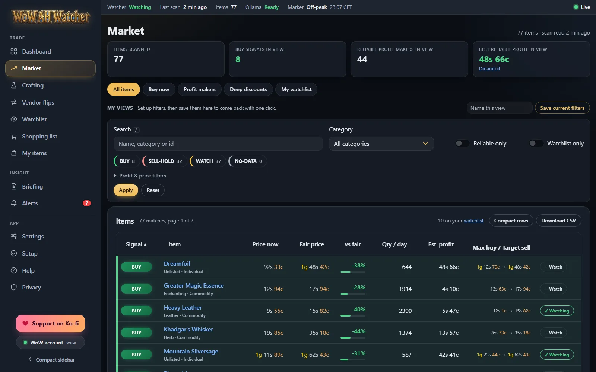
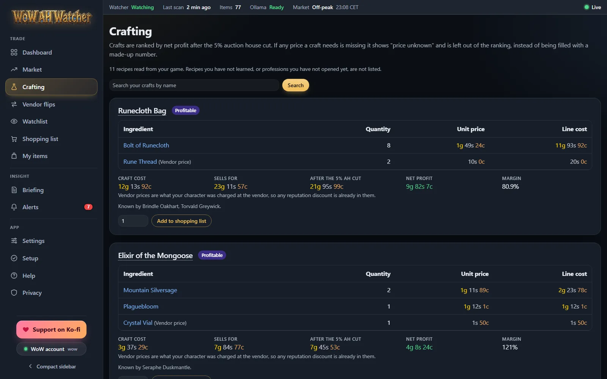
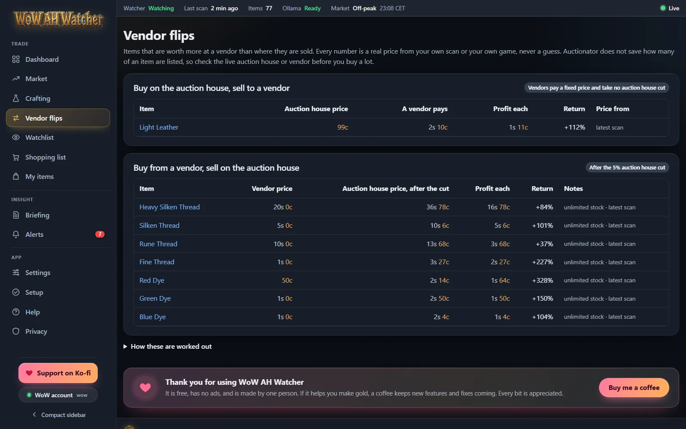
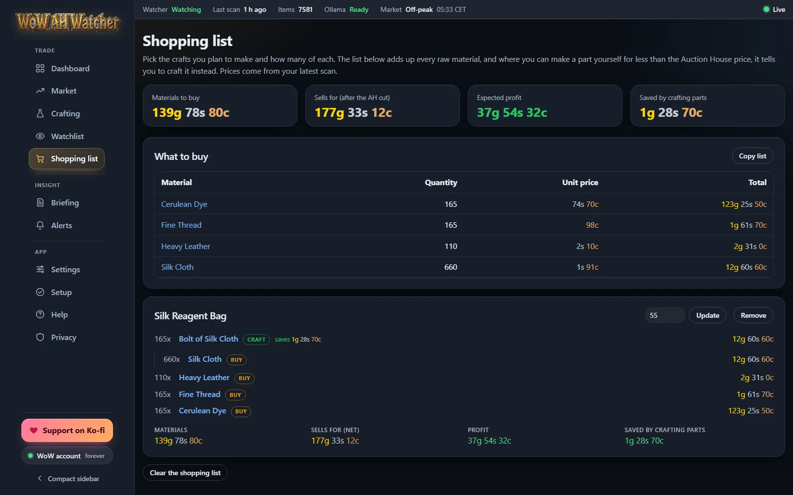
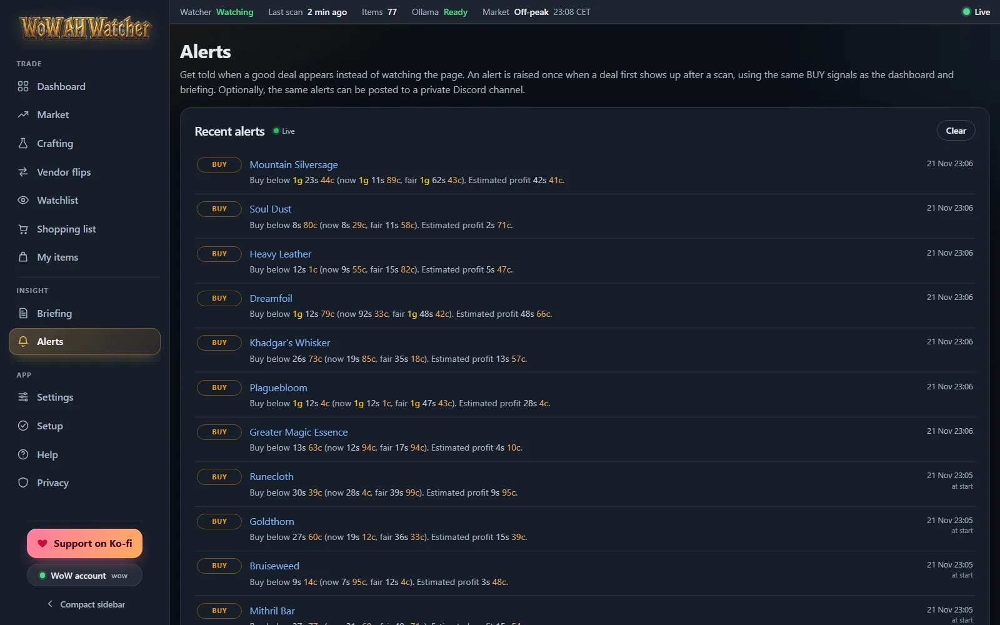
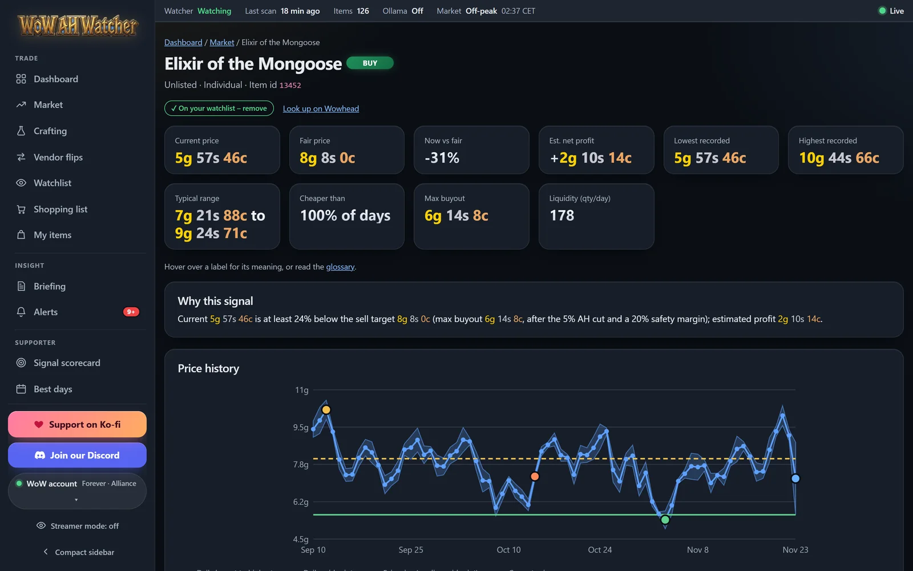
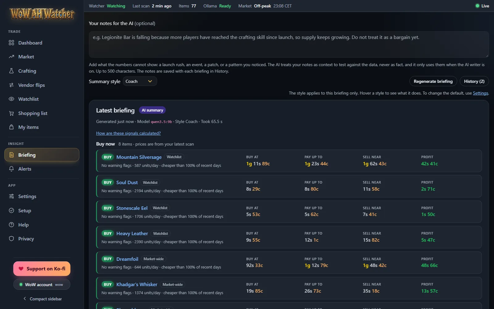
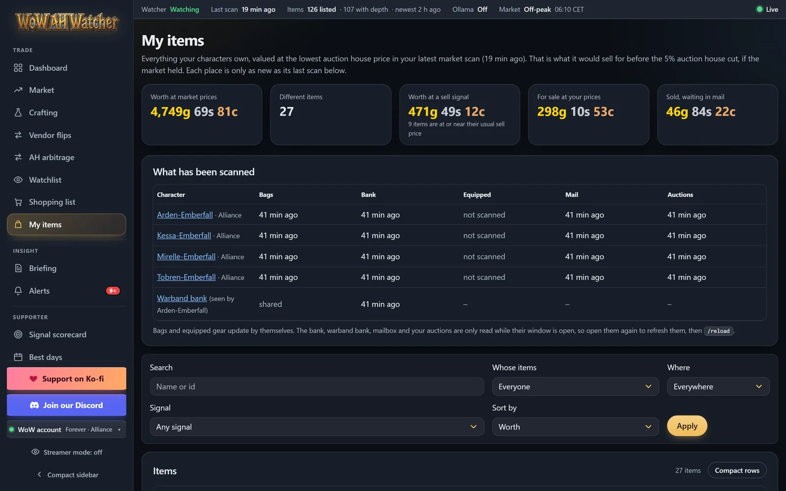

1
Scan in game
Open the Auction House and let Auctionator scan, then open your profession windows once. Log out or type /reload so the game saves its data.
WoW AH Watcher turns the prices Auctionator already records into plain-language decisions: real bargains, true crafting profit, vendor flips and a shopping list that does the maths. Quietly, on your own PC.
Prefer no installer? Download the .zip instead

Three steps, and the second one happens by itself.
Open the Auction House and let Auctionator scan, then open your profession windows once. Log out or type /reload so the game saves its data.
WoW AH Watcher reads those saved files within seconds, compares today's price with what each item really sells for, and prices every craft.
See what to buy, what to craft and what to leave alone, in plain language, with an honest label whenever the information is old.
Real screenshots from the real app. Pick a page and take a look.








Your best BUY signals, your most profitable craft and a written briefing, all on one calm page.
Built around one idea: tell the truth, in plain language, and never guess.
Every scanned item gets one signal, based only on your own history. A BUY needs a price well below what the item usually sells for, a profit after the Auction House cut, enough history and enough supply. Thin, Old price, Volatile and Falling items are never shown as BUY, so one-listing flukes and still-falling prices never pass as deals.
Cheaper of Auction House or vendor price for each material, minus the 5% cut. Vendor prices only count when the vendor never runs out.
Pick your crafts and quantities. Get one combined list, plus where crafting a part beats buying it.
Live alerts with a sidebar badge. Add a Discord webhook to get them on your phone.
The age comes from Auctionator's own scan time, not from when a file was saved. Fresh, aging, stale and very old are labelled, and old prices never pose as a deal.
Built by fixed rules, so it always works. Run Ollama locally and an AI can turn it into a flowing summary in the style you pick (Coach, Quick flip, Crafter or Cautious), weighing your own notes against the numbers. You watch it being written and can stop it at any time, and a burst of scans gives one briefing, not a pile of them. Every figure an AI summary quotes is checked against your data first, and a mismatch is discarded with the reason shown. It all stays on your machine.
Every price uses the in-game gold, silver and copper colours, everywhere in the app, so you can scan a page at a glance.
The first run finds your WoW account, helps you install the two small helper addons (item names, vendor prices and recipes) and tells you exactly what is missing, in plain language. A full built-in guide explains every page, every signal and the in-game commands. No console window, no command line: it opens in your browser like a normal Windows app.
Everything is calculated locally. Your market history, your characters and your recipes belong to you, and nobody else ever sees them.
Download, install, scan once in game. That is it.
64-bit. No administrator rights needed.
Installed, and logged in at least once.
Enabled, with at least one Auction House scan. A separate addon, not included.
Only for the AI-written briefing. Everything else works without it.
Run WoWAHWatcher-Setup-<version>.exe. Prefer no installer? Unzip the .zip anywhere and run WoWAHWatcher.exe.
The dashboard opens in your browser by itself. Click Set up your WoW account and the guided setup does the rest.
Let Auctionator scan, open your professions once, then log out or /reload. The app fills in within seconds.
Windows SmartScreen: this early build is not code-signed yet, so Windows may say “Windows protected your PC”. Click More info, then Run anyway. Every download ships with a .sha256 file so you can check it is untouched.
/reload, and it never buys, sells or clicks anything for you..sha256 file so you can verify it is untouched.Free for personal use. Download it, scan once, and see what your own data has been trying to tell you.
Prefer no installer? Download the .zip instead
WoW AH Watcher is free, and it is built and maintained by one person. If it saved you gold or made the Auction House less of a chore, a coffee helps pay for new features and fixes. It is completely optional, and the app works exactly the same without it.